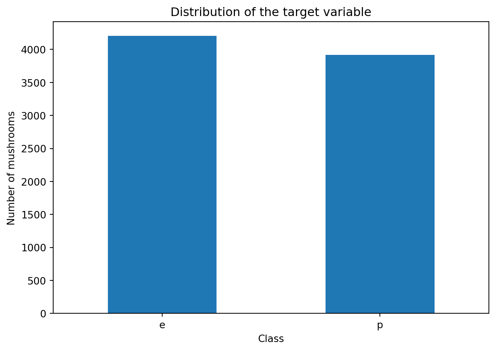
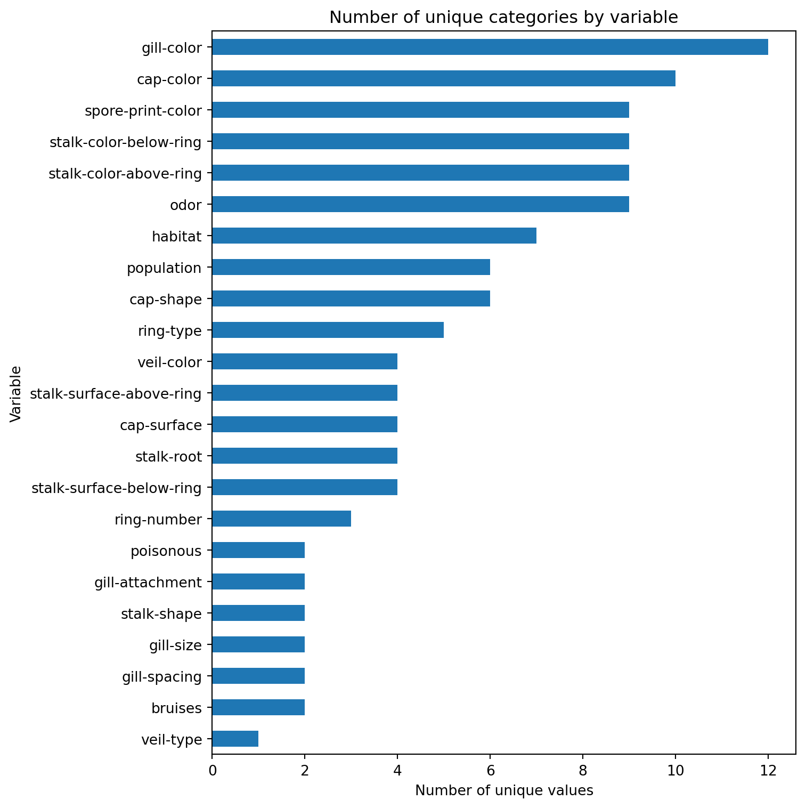
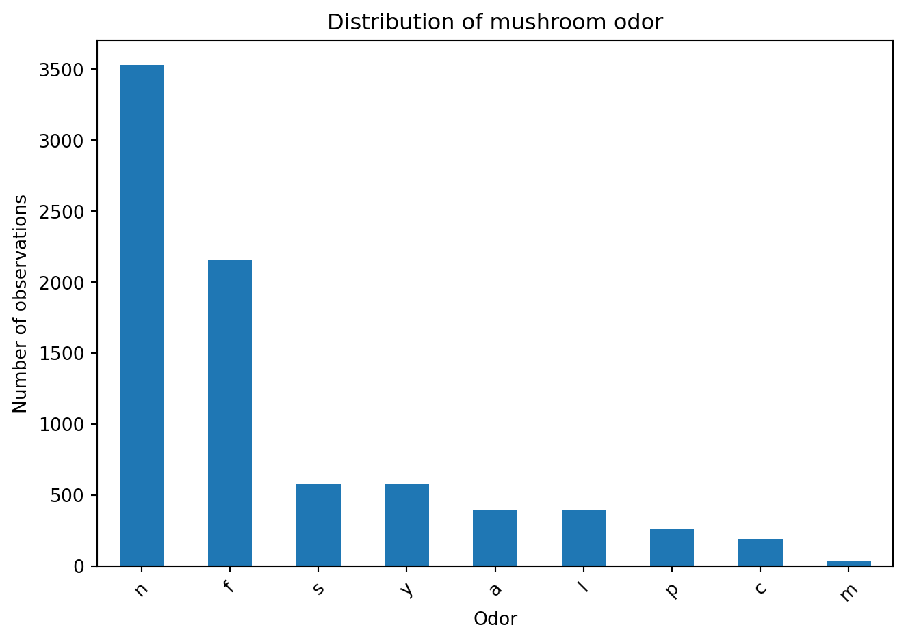
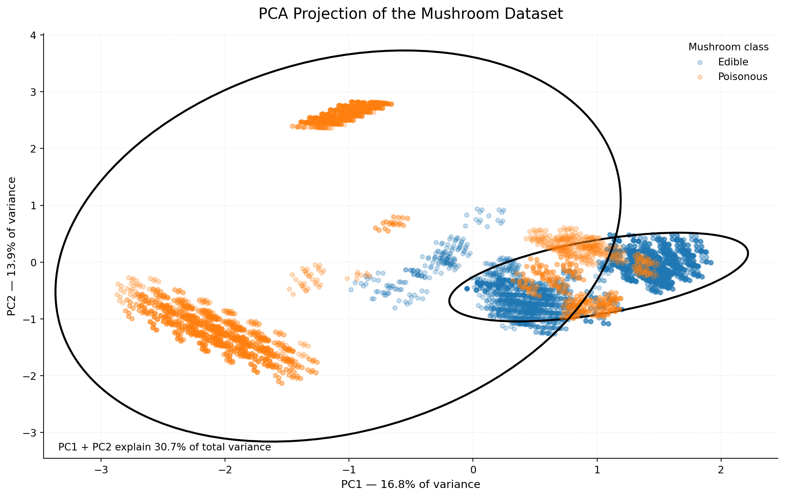

Code
from ucimlrepo import fetch_ucirepo
# Fetch the Mushroom dataset
mushroom = fetch_ucirepo(id=73)
# Data as pandas DataFrames
X = mushroom.data.features
y = mushroom.data.targetsIn the first step, we load the Mushroom dataset from the UCI Machine Learning Repository using the ucimlrepo package.
from ucimlrepo import fetch_ucirepo
# Fetch the Mushroom dataset
mushroom = fetch_ucirepo(id=73)
# Data as pandas DataFrames
X = mushroom.data.features
y = mushroom.data.targetsThe dataset is divided into two parts:
X contains the predictor variables (features),y contains the target variable, indicating whether a mushroom is edible or poisonous.For exploratory data analysis, it is convenient to combine the features and the target variable into a single pandas DataFrame.
import pandas as pd
# Combine features and target into one DataFrame
df = pd.concat([X, y], axis=1)
# Display the first five observations
df.head()| cap-shape | cap-surface | cap-color | bruises | odor | gill-attachment | gill-spacing | gill-size | gill-color | stalk-shape | ... | stalk-color-above-ring | stalk-color-below-ring | veil-type | veil-color | ring-number | ring-type | spore-print-color | population | habitat | poisonous | |
|---|---|---|---|---|---|---|---|---|---|---|---|---|---|---|---|---|---|---|---|---|---|
| 0 | x | s | n | t | p | f | c | n | k | e | ... | w | w | p | w | o | p | k | s | u | p |
| 1 | x | s | y | t | a | f | c | b | k | e | ... | w | w | p | w | o | p | n | n | g | e |
| 2 | b | s | w | t | l | f | c | b | n | e | ... | w | w | p | w | o | p | n | n | m | e |
| 3 | x | y | w | t | p | f | c | n | n | e | ... | w | w | p | w | o | p | k | s | u | p |
| 4 | x | s | g | f | n | f | w | b | k | t | ... | w | w | p | w | o | e | n | a | g | e |
5 rows × 23 columns
We can also check the basic dimensions and column names of the dataset.
# Dataset dimensions
print("Dataset shape:", df.shape)
# Column names
print("\nColumn names:")
print(df.columns.tolist())Dataset shape: (8124, 23)
Column names:
['cap-shape', 'cap-surface', 'cap-color', 'bruises', 'odor', 'gill-attachment', 'gill-spacing', 'gill-size', 'gill-color', 'stalk-shape', 'stalk-root', 'stalk-surface-above-ring', 'stalk-surface-below-ring', 'stalk-color-above-ring', 'stalk-color-below-ring', 'veil-type', 'veil-color', 'ring-number', 'ring-type', 'spore-print-color', 'population', 'habitat', 'poisonous']The dataset contains 8,124 observations and 23 variables: 22 explanatory variables and one target variable.
The Mushroom Dataset contains information about hypothetical samples corresponding to 23 species of gilled mushrooms from the Agaricus and Lepiota genera.
Each observation represents a mushroom described using a set of categorical physical characteristics. These characteristics include the shape and colour of the cap, odour, characteristics of the gills and stalk, ring characteristics, spore-print colour, population, and habitat.
The dataset contains:
The target variable, poisonous, indicates whether a mushroom is:
e – edible,p – poisonous.Therefore, the dataset can be treated as a binary classification problem.
The fact that all explanatory variables are categorical makes this dataset particularly useful for demonstrating:
Source: UCI Machine Learning Repository – Mushroom Dataset
DOI: 10.24432/C5959T
License: CC BY 4.0
Before building a machine learning model, it is useful to perform Exploratory Data Analysis (EDA).
The purpose of EDA is to understand:
This information helps us understand the data before applying machine learning methods.
First, we inspect the general structure of the DataFrame using info().
df.info()<class 'pandas.core.frame.DataFrame'>
RangeIndex: 8124 entries, 0 to 8123
Data columns (total 23 columns):
# Column Non-Null Count Dtype
--- ------ -------------- -----
0 cap-shape 8124 non-null object
1 cap-surface 8124 non-null object
2 cap-color 8124 non-null object
3 bruises 8124 non-null object
4 odor 8124 non-null object
5 gill-attachment 8124 non-null object
6 gill-spacing 8124 non-null object
7 gill-size 8124 non-null object
8 gill-color 8124 non-null object
9 stalk-shape 8124 non-null object
10 stalk-root 5644 non-null object
11 stalk-surface-above-ring 8124 non-null object
12 stalk-surface-below-ring 8124 non-null object
13 stalk-color-above-ring 8124 non-null object
14 stalk-color-below-ring 8124 non-null object
15 veil-type 8124 non-null object
16 veil-color 8124 non-null object
17 ring-number 8124 non-null object
18 ring-type 8124 non-null object
19 spore-print-color 8124 non-null object
20 population 8124 non-null object
21 habitat 8124 non-null object
22 poisonous 8124 non-null object
dtypes: object(23)
memory usage: 1.4+ MBThis allows us to check:
The variables are categorical and are represented using character codes.
An important issue for further analysis is the presence of missing values. In this dataset, missing information is represented by the character ? in the stalk-root variable. Therefore, although pandas may not identify these values as conventional NaN values, they should be treated as missing values during preprocessing.
The next step is to examine the distribution of the target variable.
df["poisonous"].value_counts()poisonous
e 4208
p 3916
Name: count, dtype: int64This shows the number of observations belonging to each target class.
The dataset contains two classes:
e – edible,p – poisonous.The classes are relatively well represented, although they are not perfectly balanced.
A visual representation makes this easier to interpret.
import matplotlib.pyplot as plt
df["poisonous"].value_counts().plot(kind="bar")
plt.title("Distribution of the target variable")
plt.xlabel("Class")
plt.ylabel("Number of mushrooms")
plt.xticks(rotation=0)
plt.tight_layout()
plt.show()
The relatively similar number of observations in both classes is useful for classification because the model is not dealing with an extremely imbalanced target variable.
Nevertheless, class proportions should always be checked before evaluating a classification model.
The next step is to determine how many unique categories are present in each variable.
unique_values = pd.DataFrame({
"variable": df.columns,
"unique_values": df.nunique()
})
unique_values| variable | unique_values | |
|---|---|---|
| cap-shape | cap-shape | 6 |
| cap-surface | cap-surface | 4 |
| cap-color | cap-color | 10 |
| bruises | bruises | 2 |
| odor | odor | 9 |
| gill-attachment | gill-attachment | 2 |
| gill-spacing | gill-spacing | 2 |
| gill-size | gill-size | 2 |
| gill-color | gill-color | 12 |
| stalk-shape | stalk-shape | 2 |
| stalk-root | stalk-root | 4 |
| stalk-surface-above-ring | stalk-surface-above-ring | 4 |
| stalk-surface-below-ring | stalk-surface-below-ring | 4 |
| stalk-color-above-ring | stalk-color-above-ring | 9 |
| stalk-color-below-ring | stalk-color-below-ring | 9 |
| veil-type | veil-type | 1 |
| veil-color | veil-color | 4 |
| ring-number | ring-number | 3 |
| ring-type | ring-type | 5 |
| spore-print-color | spore-print-color | 9 |
| population | population | 6 |
| habitat | habitat | 7 |
| poisonous | poisonous | 2 |
This analysis shows that the variables have different numbers of categories.
For example:
bruises has 2 categories,cap-surface has 4 categories,cap-color has 10 categories,gill-color has 12 categories,odor has 9 categories.The target variable poisonous has two categories.
This information is important when deciding how categorical variables should be encoded before applying machine learning algorithms.
We can also visualize the number of categories for each variable.
unique_values_sorted = unique_values.sort_values(
"unique_values",
ascending=True
)
unique_values_sorted.plot(
x="variable",
y="unique_values",
kind="barh",
figsize=(8, 8),
legend=False
)
plt.title("Number of unique categories by variable")
plt.xlabel("Number of unique values")
plt.ylabel("Variable")
plt.tight_layout()
plt.show()
The variables describe different physical characteristics of mushrooms.
| Variable | Number of categories | Description |
|---|---|---|
cap-shape |
6 | b = bell, c = conical, x = convex, f = flat, k = knobbed, s = sunken |
cap-surface |
4 | f = fibrous, g = grooves, y = scaly, s = smooth |
cap-color |
10 | n = brown, b = buff, c = cinnamon, g = gray, r = green, p = pink, u = purple, e = red, w = white, y = yellow |
bruises |
2 | t = bruises, f = no bruises |
odor |
9 | a = almond, l = anise, c = creosote, y = fishy, f = foul, m = musty, n = none, p = pungent, s = spicy |
gill-attachment |
2 observed | a = attached, d = descending, f = free, n = notched |
gill-spacing |
2 observed | c = close, w = crowded, d = distant |
gill-size |
2 | b = broad, n = narrow |
gill-color |
12 | k = black, n = brown, b = buff, h = chocolate, g = gray, r = green, o = orange, p = pink, u = purple, e = red, w = white, y = yellow |
stalk-shape |
2 | e = enlarging, t = tapering |
stalk-root |
4 observed | b = bulbous, c = club, e = equal, ? = missing |
stalk-surface-above-ring |
4 | f = fibrous, y = scaly, k = silky, s = smooth |
stalk-surface-below-ring |
4 | f = fibrous, y = scaly, k = silky, s = smooth |
stalk-color-above-ring |
9 | n = brown, b = buff, c = cinnamon, g = gray, o = orange, p = pink, e = red, w = white, y = yellow |
stalk-color-below-ring |
9 | n = brown, b = buff, c = cinnamon, g = gray, o = orange, p = pink, e = red, w = white, y = yellow |
veil-type |
1 | p = partial |
veil-color |
4 | n = brown, o = orange, w = white, y = yellow |
ring-number |
3 | n = none, o = one, t = two |
ring-type |
5 observed | e = evanescent, f = flaring, l = large, n = none, p = pendant |
spore-print-color |
9 | k = black, n = brown, b = buff, h = chocolate, r = green, o = orange, u = purple, w = white, y = yellow |
population |
6 | a = abundant, c = clustered, n = numerous, s = scattered, v = several, y = solitary |
habitat |
7 | g = grasses, l = leaves, m = meadows, p = paths, u = urban, w = waste, d = woods |
poisonous |
2 | e = edible, p = poisonous |
The distinction between possible categories documented for a variable and categories actually observed in this particular dataset is important. For this reason, the table reports the number of observed categories for variables where not all documented categories occur in the data.
Since the dataset contains only categorical variables, bar charts are an appropriate way to examine the distribution of individual features.
For example, we can examine the odor variable.
df["odor"].value_counts().plot(kind="bar")
plt.title("Distribution of mushroom odor")
plt.xlabel("Odor")
plt.ylabel("Number of observations")
plt.xticks(rotation=45)
plt.tight_layout()
plt.show()
This visualization shows how frequently each odor category occurs in the dataset.
Looking at the distribution of individual variables is useful because some categories may occur very frequently, while others may be relatively rare.
Principal Component Analysis (PCA) is used here to visualize the overall structure of the Mushroom dataset in a two-dimensional space. Since all explanatory variables are categorical, they are first transformed using one-hot encoding.
The first two principal components are then used to project the 8,124 observations onto a two-dimensional plane. Each point represents one mushroom, while the colour indicates whether the mushroom is edible or poisonous.
The ellipses indicate the approximate spread of observations within each class. They help assess whether the two classes occupy clearly separated regions of the feature space.
The percentage shown on each axis represents the proportion of variance explained by the corresponding principal component. The combined percentage indicates how much of the variation in the encoded dataset is represented by the two-dimensional PCA projection.
A visible separation between the two classes would suggest that the categorical characteristics contain a substantial amount of information related to the target variable.
from sklearn.preprocessing import OneHotEncoder
from sklearn.decomposition import PCA
import pandas as pd
import matplotlib.pyplot as plt
from matplotlib.patches import Ellipse
import numpy as np
# Separate predictors and target
X = df.drop(columns="poisonous")
y = df["poisonous"]
# Treat '?' as a missing-value code
X = X.replace("?", pd.NA)
# One-hot encoding of categorical variables
encoder = OneHotEncoder(
handle_unknown="ignore",
sparse_output=False
)
X_encoded = encoder.fit_transform(X)
# PCA
pca = PCA(n_components=2)
X_pca = pca.fit_transform(X_encoded)
pca_df = pd.DataFrame(
X_pca,
columns=["PC1", "PC2"]
)
pca_df["Class"] = y.map({
"e": "Edible",
"p": "Poisonous"
})
explained_pc1 = pca.explained_variance_ratio_[0]
explained_pc2 = pca.explained_variance_ratio_[1]
explained_total = explained_pc1 + explained_pc2
# Function for confidence ellipse
def add_confidence_ellipse(ax, x, y, n_std=2):
covariance = np.cov(x, y)
eigenvalues, eigenvectors = np.linalg.eigh(covariance)
order = eigenvalues.argsort()[::-1]
eigenvalues = eigenvalues[order]
eigenvectors = eigenvectors[:, order]
angle = np.degrees(
np.arctan2(
eigenvectors[1, 0],
eigenvectors[0, 0]
)
)
width, height = 2 * n_std * np.sqrt(eigenvalues)
ellipse = Ellipse(
xy=(np.mean(x), np.mean(y)),
width=width,
height=height,
angle=angle,
fill=False,
linewidth=2
)
ax.add_patch(ellipse)
# Create figure
fig, ax = plt.subplots(figsize=(11, 7))
# Plot both classes
for class_name in ["Edible", "Poisonous"]:
subset = pca_df[pca_df["Class"] == class_name]
ax.scatter(
subset["PC1"],
subset["PC2"],
s=18,
alpha=0.25,
label=class_name
)
add_confidence_ellipse(
ax,
subset["PC1"].values,
subset["PC2"].values,
n_std=2
)
# Labels
ax.set_xlabel(
f"PC1 — {explained_pc1:.1%} of variance",
fontsize=11
)
ax.set_ylabel(
f"PC2 — {explained_pc2:.1%} of variance",
fontsize=11
)
ax.set_title(
"PCA Projection of the Mushroom Dataset",
fontsize=15,
pad=15
)
ax.legend(
title="Mushroom class",
frameon=False
)
ax.grid(
alpha=0.15,
linestyle="--"
)
# Remove unnecessary borders
ax.spines["top"].set_visible(False)
ax.spines["right"].set_visible(False)
# Annotation
ax.text(
0.02,
0.02,
f"PC1 + PC2 explain {explained_total:.1%} of total variance",
transform=ax.transAxes,
fontsize=10
)
plt.tight_layout()
plt.show()
The EDA provides several important observations about the Mushroom dataset.
First, the dataset consists entirely of categorical variables, making it a useful example for working with categorical data in machine learning.
Second, the target variable contains two classes: edible and poisonous. The classes are relatively well represented, so there is no severe class imbalance.
Third, the explanatory variables have different numbers of categories. Some variables contain only two categories, while others contain considerably more.
Finally, comparing categorical variables with the target variable provides an initial indication of which characteristics may contain information useful for classification.
The EDA does not by itself determine which variables should be used in the final model. However, it provides a basis for the next stages of the analysis, including data preprocessing, categorical encoding, feature selection, model training, and model evaluation.